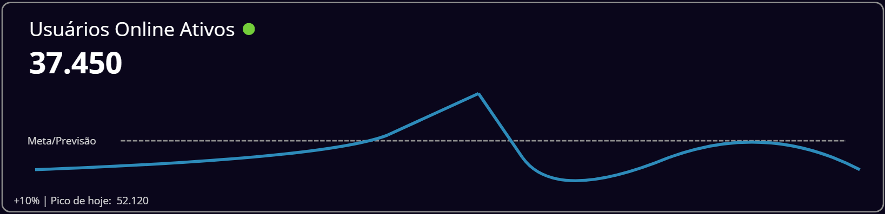

Painel de controle da Saúde do Jogo
Atualizado em: 13/10/2025 14:59:07
Atualizado em: 13/10/2025 14:59:07
STATUS GERAL: ÓTIMO

Margem de Capacidade
Mínimo: 15% | Capacidade livre para picos
25%
ÓTIMO
Mínimo: 15% | Capacidade livre para picos
Taxa de Desconexões Críticas
Meta: < 0.15% | 80 desconexões/10.000
0.08%
ÓTIMO
Meta: < 0.15% | 80 desconexões/10.000
Jogadores Impactados por Latência
Meta: < 4% | Latência Média Jogo: 120ms
5.2%
ATENÇÃO
Meta: < 4% | Latência Média Jogo: 120ms